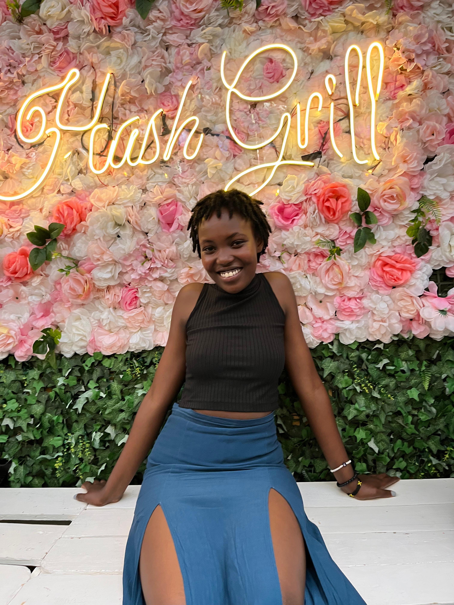
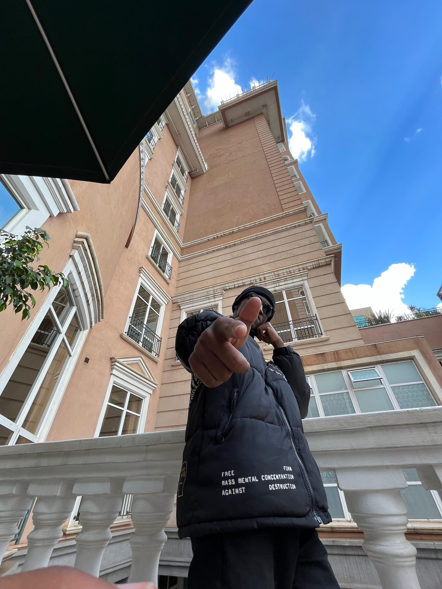

Featured Works


About
With a passion for capturing the beauty in everyday moments, I bring a unique perspective to every shot. My work is a blend of technical precision and artistic vision, creating images that tell compelling stories.
Connect with me